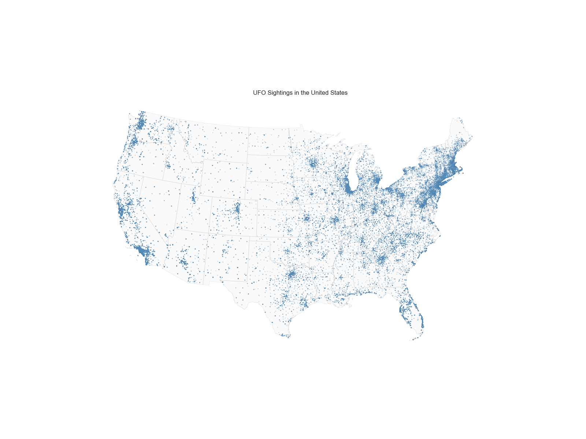
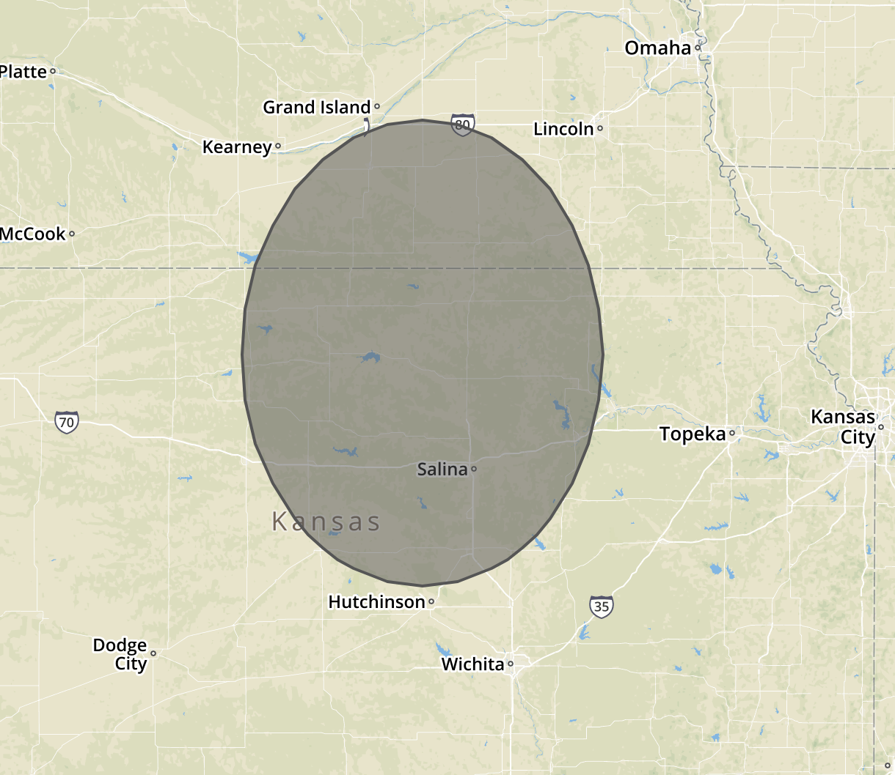
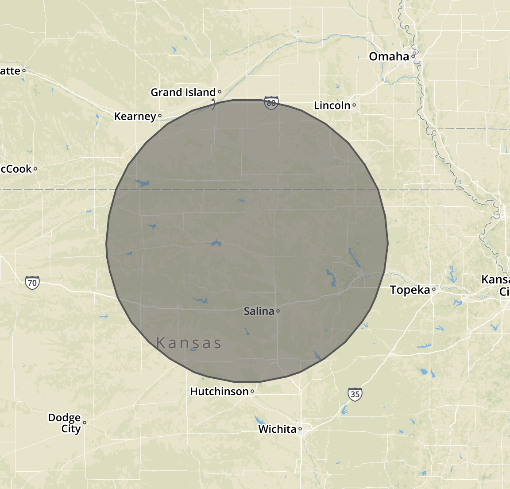
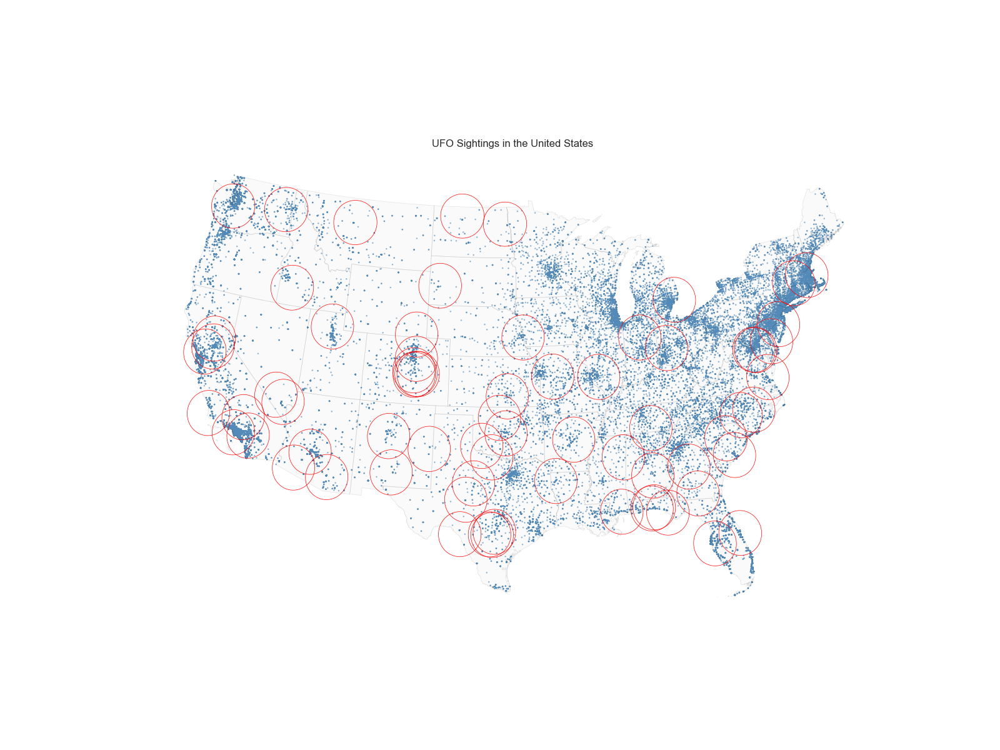
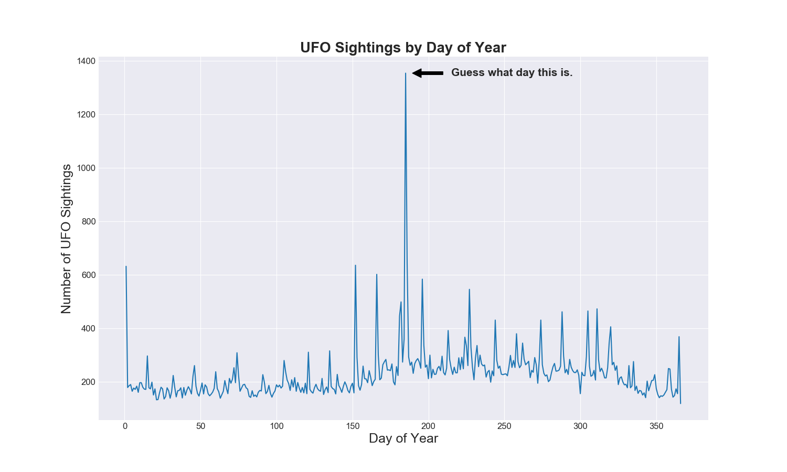
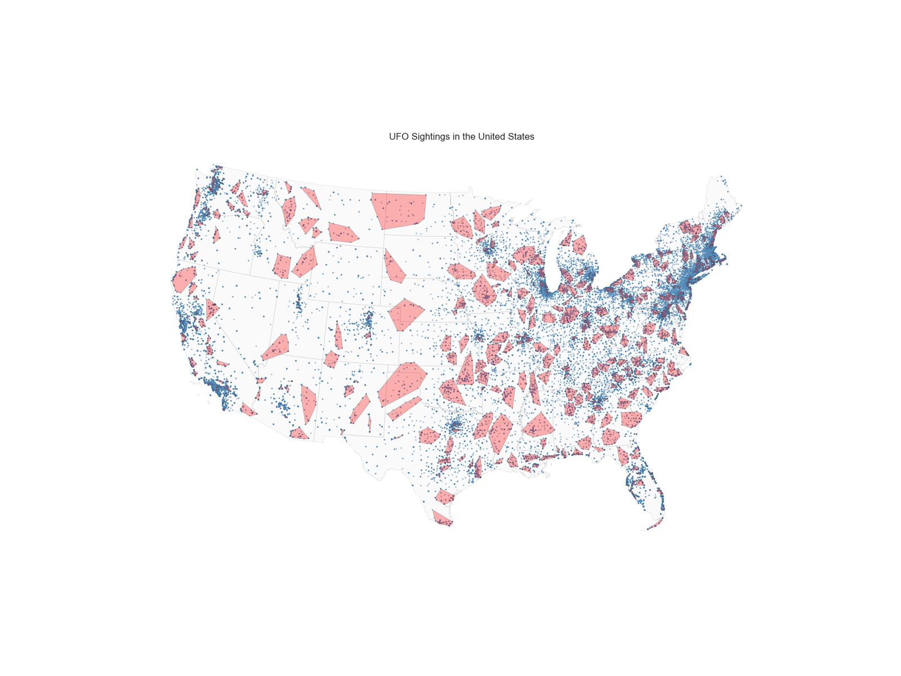
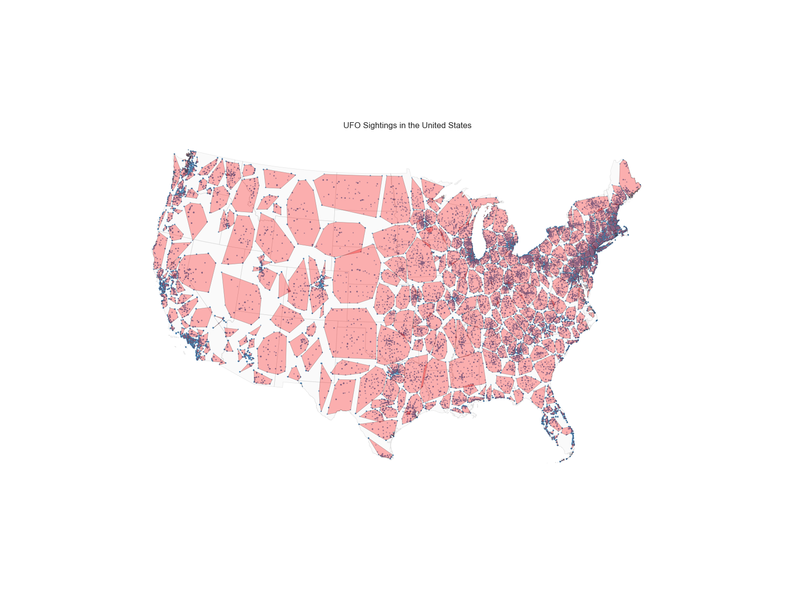
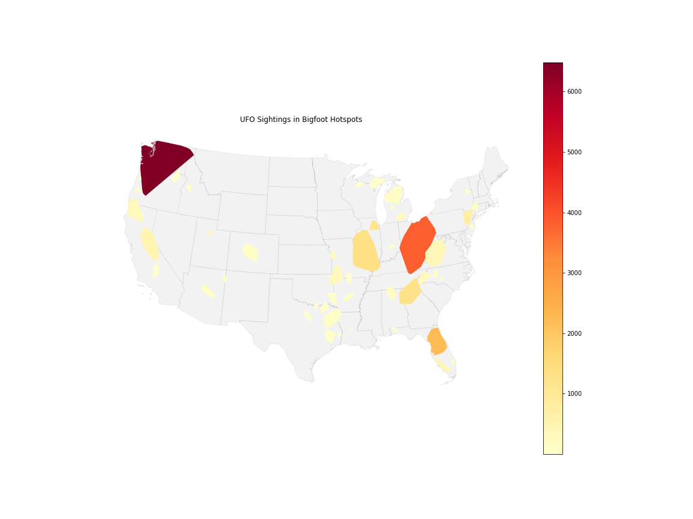

Geography with PyData
Tim Renner
PyData Meetup, 11/28/2017
About Me
Data Science Manager, Geography at HomeAway
Really like Makefiles
Not About
- ArcGIS / Arcpy
- Geospatial statistics
- Bigfoot

90,000 geocoded UFO sightings from the National UFO Reporting Center (NUFORC).
About
- Extracting and ingesting geocoded data
- Manipulating shapes and making maps
- Running machine learning algorithms on geospatial data
- Aliens?
Ingesting the Sightings
import pandas as pd
import geopandas as gpd
# Pandas data frame first.
ufo_sightings = pd.read_csv('ufo_sightings.csv')Common serialization: CSV with longitude / latitude.
Shapely
from shapely.geometry import MultiPoint
ufo_sighting_points = list(
MultiPoint(
# Shapely can take numpy arrays as inputs for points.
ufo_sightings[['longitude','latitude']].values
).geoms
)Shapely is an object-oriented library for geometric manipulations.
Geography 101

Longitude is x.
Shapely
from shapely.geometry import Point
point_a = Point(0.0, 0.0)
point_b = Point(1.0, 1.0)
point_a.distance(point_b)
# [0] 1.4142135623730951 <===== This is NOT kilometers.Shapely performs planar geometric operations irrespective of any coordinate system.
Geopandas
import geopandas as gpd
ufo_sightings_geo = gpd.GeoDataFrame(
ufo_sightings,
# Geometry is a special column in geopandas.
geometry = ufo_sighting_points,
# GeoPandas also adds a coordinate system.
# EPSG 4326 is standard lon/lat in degrees.
crs={"init": "EPSG:4326"}
)Geopandas attaches a list of Shapely objects to a pandas DataFrame.
Shapefiles
# This shapefile contains polygons for each US state.
usa = gpd.read_file('cb_2016_us_state_500k.shp')Geopandas reads ESRI shapefiles easily.
These files contain geometry and CRS information, as well as data columns.
Geoplot
import geoplot as gplt
import matplotlib.pyplot
# The projection is pretty important to ensure an accurate
# visual representation of the data.
proj = gplt.crs.AlbersEqualArea(
central_longitude=-98,
central_latitude=39.5
)
# Start the plot with the standard matplotlib way.
fig,ax = plt.subplots(figsize=(16,12))Geoplot is a high level mapping library designed for geopandas and built on matplotlib.
Polyplot
gplt.polyplot(
# First argument is a geopandas GeoDataFrame.
usa,
# Pass the _plot_ projection we defined earlier.
projection=proj,
# The rest is plain matplotlib stuff.
ax=ax, linewidth=0.5,
facecolor='lightgray', alpha=0.1
)polyplot plots GeoDataFrames with polygons in the geometry column.
Pointplot
gplt.pointplot(
# First argument is a geopandas GeoDataFrame.
ufo_sightings_geo,
# Pass the _plot_ projection we defined earlier.
projection=proj,
# Regular matplotlib stuff.
ax=ax, s=0.75, alpha=0.25
)pointplot plots GeoDataFrames with points in the geometry column.

Air Force Bases
bases = pd.read_csv('military_bases.csv')Distance queries are geometric. To find UFO sightings near Air Force bases, draw a circle around each base.
Buffer, Attempt 1
earth_radius = 6371.0 # kilometers.
central_point = Point(-98, 39.5)
central_buffer = central_point.buffer(
(150.0 / earth_radius) * (180.0 / np.pi)
)A naive buffer would be to convert kilometers to radians.


The earth is not flat.
Transverse Mercator

Pyproj
def tmerc_transforms(geometry):
# Some projections are so common they're named.
lonlat = pyproj.Proj(init='EPSG:4326')
# Some projections need to be defined manually.
tmerc = pyproj.Proj(
proj='tmerc', ellps='WGS84', datum='WGS84',
lon_0=geometry.centroid.x # <- Central meridian.
)
tmerc2lonlat = curry(pyproj.transform)(tmerc,lonlat)
lonlat2tmerc = curry(pyproj.transform)(lonlat,tmerc)
return tmerc2lonlat,lonlat2tmercPyproj performs every projection we’ll need.
Buffer, Attempt 2
def geographic_buffer(geometry, distance_km):
tmerc2lonlat,lonlat2tmerc = tmerc_transforms(geometry)
# First, put the geometry into transverse Mercator.
geo_tmerc = shapely.ops.transform(lonlat2tmerc, geometry)
# Draw the buffer in transverse Mercator coordinates.
geo_tmerc_buffered = geo_tmerc.buffer(distance_km*1000)
# Transform back into lon/lat.
geo_buffered = \
shapely.ops.transform(tmerc2lonlat, geo_tmerc_buffered)
return geo_bufferedDraw the buffer in tranverse Mercator to remove distortion.

Air Force Buffers
air_force_base_vicinities = [
# Use geographic_buffer to draw circles around the points.
geographic_buffer(Point(row.longitude, row.latitude), 150.0)
for _,row in air_force_bases.iterrows()
]
air_force_bases_geo = gpd.GeoDataFrame(
air_force_bases,
# Add polygons as a geometry column.
geometry=air_force_base_vicinities,
crs={"init": "EPSG:4326"}
)Drawing the buffers around each point creates a polygon for each base.
UFO Sightings Near Air Force Bases
# ... the USA and UFO sightings.
gplt.polyplot(
air_force_bases_geo,
ax=ax,
projection=proj,
linewidth=0.5,
facecolor='none',
edgecolor='red'
)
Explained
You’re welcome.
Bonus Time!

Clustering
import hdbscan
clusterer = hdbscan.HDBSCAN(
min_cluster_size=50,
min_samples=1,
metric="haversine" # <=== Slow, but not wrong.
)HDBSCAN clusters dense points when the density is highly varying.
Clustering
import hdbscan
clusterer = hdbscan.HDBSCAN(
min_cluster_size=50,
min_samples=1,
metric="haversine" # <=== Slow, but not wrong.
)Clustering on a curved earth requires either a projection or a different distance metric.
Clustering
# For haversine, HDBSCAN needs an Nx2 numpy array.
ufo_sighting_coordinates = np.radians(
ufo_sightings_geo[['latitude', 'longitude']].values
)
# HDBSCAN implements the usual scikit-learn API.
ufo_sightings_geo.loc[:,'cluster_label'] = \
clusterer.fit_predict(ufo_sighting_coordinates)The haversine metric defines distance on a sphere, but needs lat,lon coordinates in radians.
Geography 102
Sometimes latitude is x?
Convex Hulls
cluster_polygons = [
# Every geometry has the convex_hull attribute -
# it's not always a polygon.
MultiPoint(
group[['longitude','latitude']].values
).convex_hull
for label,group in ufo_sightings_geo.groupby('cluster_label')
if label != -1
]Convex hulls are a really simple way to turn collections of points into polygons.
UFO Sightings with Clusters
# ... the USA and UFO sightings.
gplt.polyplot(
# Add a CRS to turn a list of polygons into a GeoSeries.
gpd.GeoSeries(
cluster_polygons,
crs={"init": "EPSG:4326"}
),
ax=ax, projection=proj,
linewidth=0.5, facecolor='none', edgecolor='red'
)The GeoSeries object is like a pandas series for geometries.

Outliers
points_to_polygons = np.array([
[
# This is planar distance, but we only want the
# rank, not the value.
p.geometry.distance(poly)
for poly in cluster_polygons_neighbors
]
for _,p in ufo_sightings_geo.iterrows()
])
new_cluster_labels = np.argmin(points_to_polygons, axis=1)Naively assigning each point to its nearest cluster is computationally expensive.
RTree

Spatial Indexes
import rtree
# This generator loads the index.
def cluster_polygon_loader(polygons):
for ii,polygon in enumerate(polygons):
# Takes an ID, bounding box, and payload.
yield (ii, polygon.bounds, ii)
# Rtree's constructor takes an optional generator for
# faster loading speed.
polygon_index = rtree.index.Index(
cluster_polygon_loader(cluster_polygons)
)Indexing the polygons with rtree enables fast nearest neighbor searches.
Spatial Indexes
import rtree
# This generator loads the index.
def cluster_polygon_loader(polygons):
for ii,polygon in enumerate(polygons):
# Takes an ID, bounding box, and payload.
yield (ii, polygon.bounds, ii)
# Rtree's constructor takes an optional generator for
# faster loading speed.
polygon_index = rtree.index.Index(
cluster_polygon_loader(cluster_polygons)
)The rtree indexes bounding boxes, which are .bounds in Shapely.
Nearest Cluster Labels
def nearest_cluster(lon,lat):
# The returned results need to be wrangled a bit.
return list(polygon_index.nearest((lon,lat)*2, 1))[0]
ufo_sightings_geo.loc[:,'cluster_label_neighbor'] = np.array([
# This gives us the index of each point's nearest
# cluster polygon.
nearest_cluster(row.longitude, row.latitude)
for _,row in ufo_sightings_geo.iterrows()
])Querying the rtree index is fairly straightforward. Each point with the same nearest cluster gets the same label.


Spatial Joins
ufo_in_bigfoot_polygons = gpd.sjoin(
# Left and right frames.
bigfoot_polygons_frame, # <=== geometry + polygon label
ufo_sightings_geo,
# Just like pandas.
how="left",
# Can be intersects, contains, or within.
op="intersects"
)Spatial joins use geometric operations as join keys.
GeoDataFrame Regular Joins
bigfoot_polygons_count = \
ufo_in_bigfoot_polygons\
.groupby('bigfoot_polygon_label')\
.agg({'report_link':'count'})
bigfoot_polygons_frame = \
bigfoot_polygons_frame.join(
bigfoot_polygons_count,
on="bigfoot_polygon_label"
)GeoDataFrames do regular joins too.
Choropleth Map

Polygons are differentiated by color.
Choropleth-ish Map
# ... add the USA.
gplt.choropleth(
bigfoot_polygons_frame,
hue='ufo_sightings', # <=== Color by count.
# Geoplot stuff.
projection=proj, ax=ax,
# MPL stuff.
legend=True,
cmap="YlOrRd", # <=== matplotlib color map.
k=None # <=== None for continuous.
)Typically they’re used to cover the entire area, so this map stretches the definition a little bit.

Libraries We Talked About
- shapely (github.com/Toblerity/Shapely)
- geopandas (geopandas.org)
- geoplot (residentmario.github.io/geoplot)
- pyproj (jswhit.github.io/pyproj)
- rtree (toblerity.org/rtree)
- hdbscan (hdbscan.readthedocs.io)
Libraries We Didn’t Talk About
- arcpy (pro.arcgis.com/en/pro-app/arcpy/)
- geopy (github.com/geopy/geopy)
- pysal (pysal.readthedocs.io)
- bokeh (bokeh.pydata.org)
- datashader (datashader.readthedocs.io)
- holoviews / geoviews (geo.holoviews.org)
Other Operations
- Unions and cascaded unions - geometric merging in Shapely.
- Differences and intersections - other geometric set operations in Shapely.
- Vectorized geometric operations in GeoPandas.
- Overlays in GeoPandas.
Other Links
- UFO sightings dataset - data.world/timothyrenner/ufo-sightings
- Bigfoot sightings dataset - data.world/timothyrenner/bfro-sightings-data
- This talk - timothyrenner.github.io/talks/20171128-geo-pydata
- Blog - timothyrenner.github.io
- NPR - ‘I Don’t Believe In Science,’ Says Flat-Earther Set To Launch Himself In Own Rocket
Questions?

Images
- Hong Kong, Obama’s Divided Nation - flowingdata.com
- Sasquatch Meets UFO - latest-ufo-sightings.net
- Transverse Mercator - gisgeography.com
- RTree - Wikipedia
- Rocket Man - AP
- X-Files - 20th Century Fox